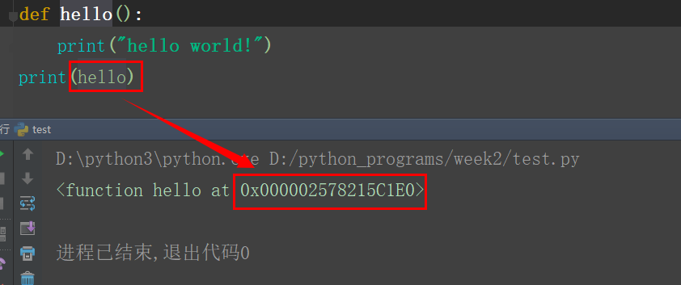
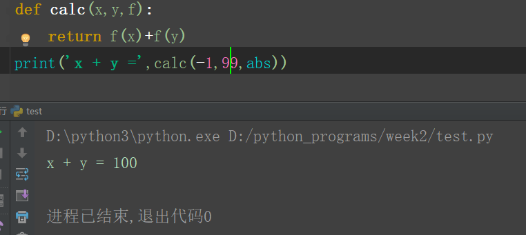
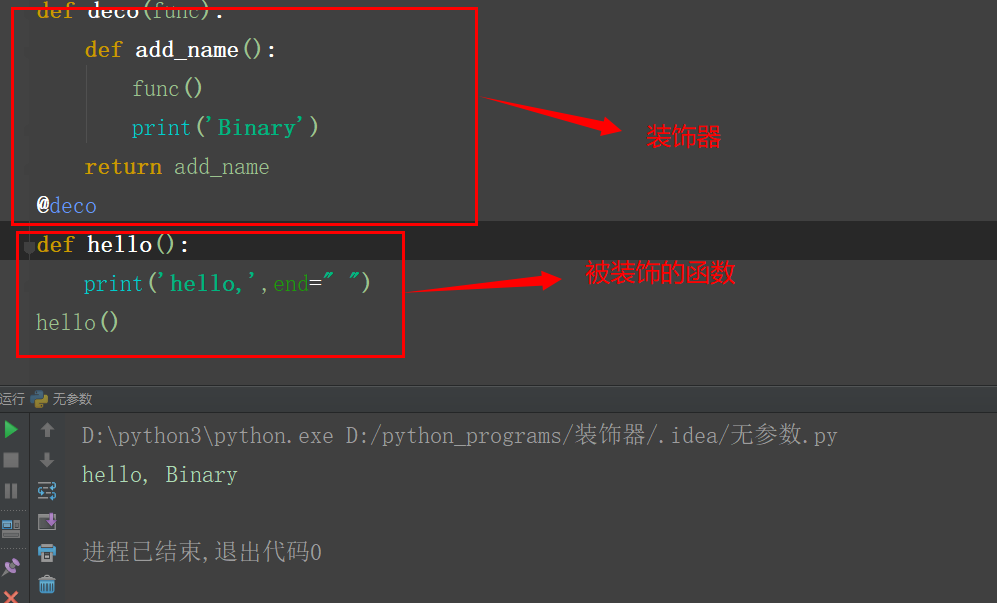
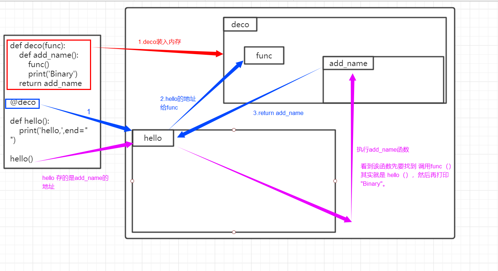
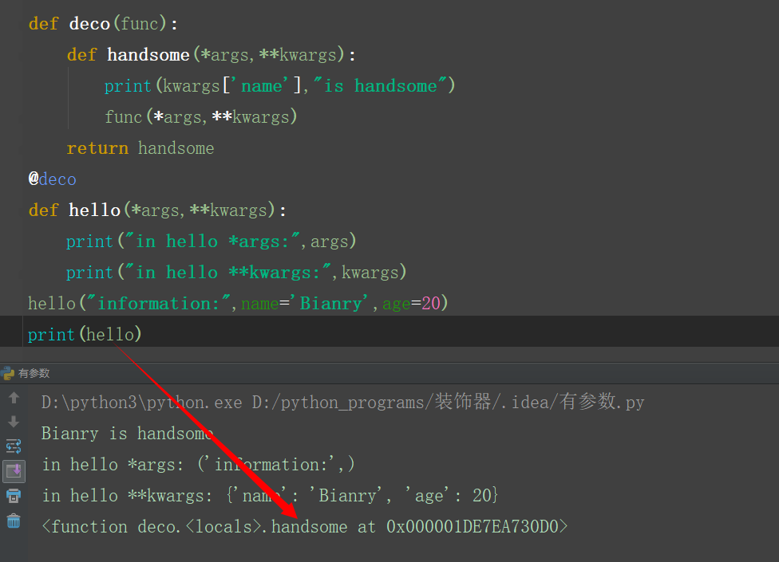
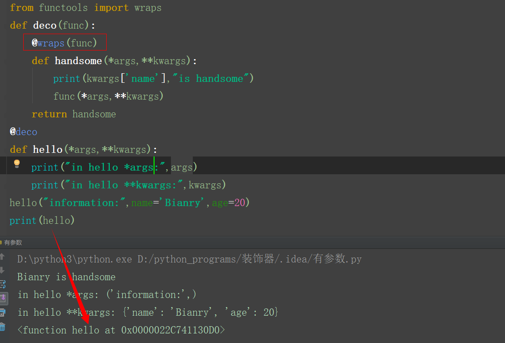

要了解装饰器，先要了解以下几点
1.函数等价于变量
函数在内存中的存储和变量是类似的

hello就相当于一个变量，起始地址是 “0x000002578215C1E0”，从这个地址开始后面的一段内存空间，存放hello这个函数的内容
2.高阶函数
一个函数可以被当作是另一个函数的参数传入，返回值也可以是一个函数

3.函数嵌套
形如：
def func1():
def func2():
pass装饰器：
装饰器应该满足：
1.不改变被装饰函数的源代码
2.不改变原函数的调用方式
3.为原来的函数添加新的功能
example：

如果没有装饰器，函数调用结果应该为 hello ，加上装饰器后函数的调用结果变了，但是调用函数的方式以及函数的源代码都为发生改变。
@deco 这句话等价于 hello = deco（hello） hello被作为参数传给了deco参数，并且把hello的地址给了func，而返回值又将add_name函数的地址给了 hello ，所以调用 hello()
其实执行的是add_name函数的内容，add_name执行到 func()语句时，会去执行原来的 hello 函数的内容，因为一开始hello就把地址给了func。有点混乱，画个图吧！

简单来说装饰器其实就是一个函数，而这个函数会在内部嵌套一层或多层函数，内层嵌套的函数会再调用原来的函数基础上加上一些新的功能。
这个装饰器装饰的函数是没有参数的，下面看看有参数的函数的装饰器
example：

虽然实现了装饰器的功能但是，原来的 hello 被handsome给覆盖了，这让人有点不舒服，可能时强迫症吧
可以用 wraps 来装饰内层函数来解决这个问题

wraps 的作用时保留原来函数的属性。